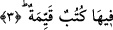
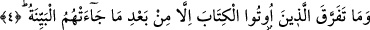

Peygamber Efendimiz’in zâtî azametini bir de izâfetten anlaşılan izâfî azameti ile
pekiştirmektedir. Buna göre ifâdenin mânâsı, “Allah’tan gelen peygamber, hem de ne
büyük peygamber” şeklinde olur.
Âyetteki ‘suhuf’ “sahîfe” kelimesinin çoğulu olup mânâsı, yazılan şeyin zarfı ve kağıt
yapraklarındaki yeri demektir.
Bu sayfaların temiz olmalarından maksadın, “bâtıl” dan münezzeh olmasıdır.
Gerçekten bu sayfalar, kendilerine bâtılın ne önden ne de arkadan gelmeyeceği
sayfalardır. Ayrıca bunlar temiz olmayanların dokunmasından münezzeh sayfalardır.
Kâşifî demiştir ki; yalan ve bühtandan pâk sahifeler.
“Okuma” fiilinin “birer kağıt parçası olan sayfalar”a izâfe edilmesi mecazîdir. Veya
hulûl alakası ile, o sahifelerdekinden mecazîdir. Yâni sayfalar zikredilmiş, o mekanda
var olan âyetler kasdedilmiştir. Söylenmek istenen şudur: Peygamber (s.a.) Efendimiz’in
okuduğu Kur’ân önceki peygamberlerin sahifelerini tasdik ettiğine göre ve içindeki
hüküm ve şeriatler bakımından uygun olduğuna göre, Hz. Peygamberin (s.a.) okuduğu
âdetâ öncekilerin sahifeleri ve kitapları olmuş olur. Kur’ânın “sahifeler” diye olunması
mecazendir.
Kâşifî demiştir ki; ta’zim amacıyla Kur’ân’a suhuf dedi. Zira bütün suhuflardaki
mânâların sırları Kur’ân’da toplanmıştır.
3. En doğru hükümleri havi (sahifeler)
“O sahifelerde dosdoğru hükümler vardır.” Yani bu sayfalarda Hakkı ve doğruyu
dile getiren, yazıya geçirilmiş dosdoğru hükümler vardır.
Doğru ve düzgün bir şekilde yazılanlar o sayfalardadır, yâni hükümler ve nasihatler.
Müfredât’ta ifâde edildiğine göre, bu âyet-i kerimede, Kur’ân-ı Kerîm’de Allah’ın
kitaplarının mânâlarının var olduğuna işâret edilmektedir. Çünkü Kur’ân Allah’ın
önceden indirdiği ilahi kitapların özü ve semeresi dir.
4. Kendilerine kitap verilenler ancak o açık delil (Peygamber) kendilerine
geldikten sonra ayrılığa düştüler.
Bundan önceki âyet-i kerîmede ehl-i kitapla müşriklerin ikisinin birlikte
zikredilmesinin ardından bu âyette sâdece ehl-i kitab zikredilmiştir. Bunun sebebi,
onların hallerinin çirkinliğini göstermek ve ehl-i Kitab Hz. Peygamberin (s.a.) gerçek